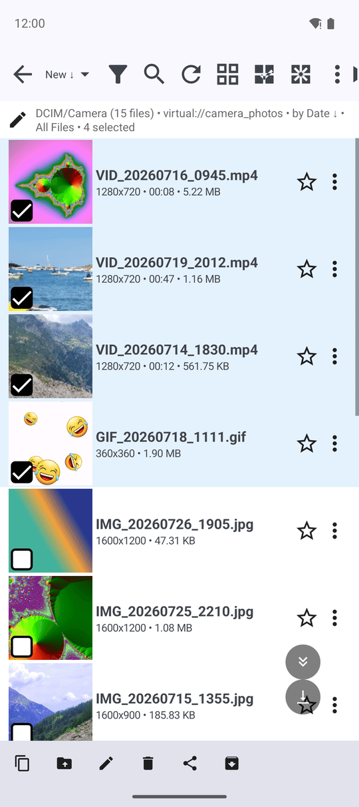
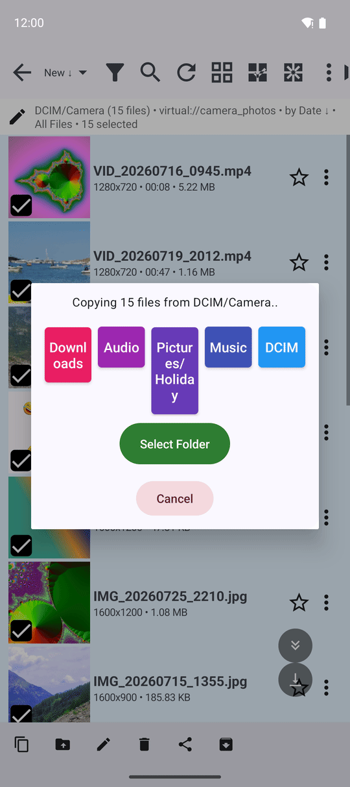
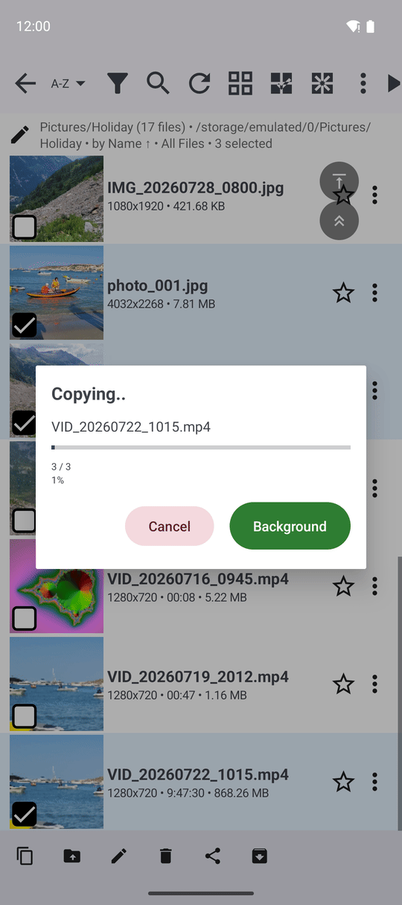

Copying, Moving and Deleting Files and Folders
Select files and whole folders in the file browser, copy or move them between the phone, network folders and the cloud, delete them with or without the trash, and take the last step back with Undo.
Why You'll Love This
Quick Sort is for one file at a time. But sometimes you want to grab forty photos at once and put them on the memory card, move a whole "Holidays 2019" folder to the computer at home, or clear a folder of blurry shots. That is everyday file work, and the file browser does it without a separate file manager.
Copies and moves work between any two places the app knows: the phone, a memory card, a network folder, an FTP or SFTP server and cloud storage. Deleted files go to the trash first, where the phone allows it, so a mistake is not the end of the world.
- ✓ FastMediaSorter in any edition. Lite copies and moves between folders on this device and memory cards; FOSS also to and from network folders and servers; Standard, noLegal, Photos, Legacy and VR also to and from the cloud. The Photos edition works with pictures.
- ✓ A resource open in the file browser. Move, rename and delete need a resource the app can write to.
Select files and folders
Every row in the file browser has a check box - on files and on folders alike. Tick the ones you want. To select a whole run, tick the first file, then long-press the last one: everything in between is selected too.
Select All at the top ticks the whole folder, the button next to it clears the selection. The number of selected items appears after the folder's name, for example "Holidays • 12 selected".
As soon as something is selected, a bar with the operations appears at the bottom: Copy, Move, Rename, Delete, Share, Archive and Undo. On a read-only resource you see only Copy and Share.

Copy or move them somewhere else
Tap Copy or Move. A window says what is going to happen, for example "Copying 12 files from Camera", and "Folders included: 1" if you picked folders. Below are your destinations as colored buttons, and Select Folder for any other place.
Tap a destination, or tap Select Folder and choose a folder in Android's folder window. The transfer starts.
A folder is copied with everything inside it, every subfolder included - even from the phone to the home computer or to the cloud. The app refuses unsafe choices before it starts, and says why:
- "A folder can't be copied or moved into itself. Choose a destination outside it."
- "This folder is already in the chosen destination. Pick a different destination."
- "Not enough space on SD card - 1.2 GB more is needed. Free up room there or pick another destination."

Watch it go - or let it run in the background
A progress window shows the file being copied, how many are done ("3 / 12"), the speed ("1.5 MB/s"), the overall percentage and the time left ("~2m 10s"). The speed is averaged over a few seconds, so the numbers stay calm instead of jumping about.
Tap Background to carry on with other things; Cancel stops the transfer. What happens in the background is described in Background transfers and their progress.

When a file with the same name is already there
Nothing is replaced unless you ask for it. By default a file whose name already exists at the destination is left out, and the file at the destination stays as it was. The final message counts only the files that were really copied or moved - if it says fewer than you selected, the rest already existed there.
To replace such files, open Settings, the Management tab, Copy, move and overwrite behavior, and turn on Overwrite existing file when copying or Overwrite existing file when moving.
Delete files and folders
Select what should go and tap Delete. What happens next depends on where the files are and on your settings:
- On the phone or memory card with the trash on - the files move into a hidden
.trashfolder next to them, where Undo can bring them back. Turn this on or off with Use trash folder (.trash) in Settings, Management, File deletion and trash. - Without the trash - the files are deleted for good. On Android 11 and newer, Android itself may show its own window asking you to allow the deletion of media files; tap Allow.
- On a network folder or in the cloud - these places have no trash, so the app shows a list of what will go and a Delete permanently button, once per resource. Tick Don't show again for this resource if you do not need the reminder.
With Enable Safe Mode and Confirm before delete on, the app first asks "Delete Files?" - or, for a whole folder, "Delete folder .. and all its contents?". If the trash cannot be used for some files, the app says so: "Trash is unavailable for some files - they were deleted permanently."
Browse on an SMB resource, 3 files selected, Delete tapped.
Undo the last step
Right after a copy, move, delete or rename, a message at the bottom offers Undo, and the Undo button stays in the operations bar. You have about ten seconds:
- Undo a delete - the files come back out of the trash to their place.
- Undo a move - the files go back where they came from. A moved folder is carried back as a background transfer ("Moving the folders back..").
- Undo a copy - the copies are deleted. For folders the app asks first, "Undo the folder copy?", and warns that anything added to the copies since will go too; tap Delete the copies to confirm. The original folders stay where they are.
- Undo a rename - the old name comes back.
In the player, the Undo button of the command panel brings back the file you just deleted.
How long the trash keeps files
The trash is a safety net for the moment, not an archive. A background task runs about every 15 minutes and empties trash folders whose contents are older than a few minutes, so the space comes back by itself. To empty all trash folders at once, tap the Clear Trash button next to Use trash folder (.trash) - the app reports how many trash folders it removed.
What You Get
Forty photos are on the memory card, the "Holidays 2019" folder with all its subfolders is on the home computer, the blurry shots are gone - and the one photo you deleted by mistake came back with a single tap on Undo.
Tips and Troubleshooting
- Moving between the phone and the cloud takes as long as your connection needs; send it to the background and keep sorting.
- Delete by mistake on a network folder? There is no trash there. When in doubt, move files to a 'To delete' folder first and empty it later.
- Renaming several files has its own page - see Renaming files and folders.
- Selecting in bigger ways - filters, range selection and more - is covered in Multi-selection and batch operations.